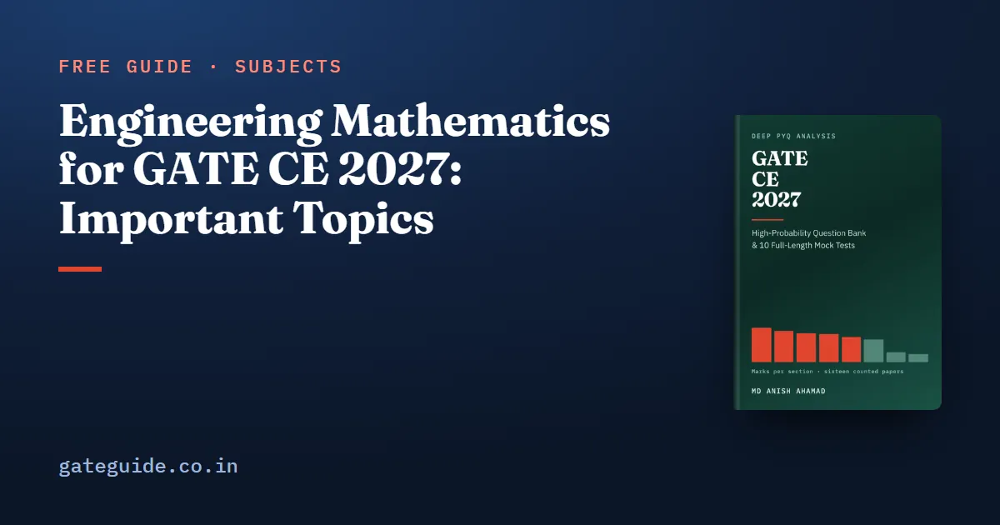

Engineering Mathematics for GATE CE 2027: Important Topics

Engineering Mathematics averaged 12.9 marks a paper across all sixteen GATE Civil papers from 2019 to 2026, and its six named areas are close enough in weight that none can be dropped. The largest takes a quarter of the section and the smallest a tenth. That shape settles the strategy: a thin, even pass over all six collects more marks than a deep pass over two.
In this guide
Key takeaways
- Mean 12.9 marks a paper, range 5. It was worth exactly 13 marks in twelve of the sixteen papers.
- Six areas, with shares of 25, 20, 17, 14, 14 and 10 per cent. Breadth beats depth.
- Only two area-years in the record are zeros: partial differential equations, in both 2019 papers and both 2021 papers.
- The 2027 change is one line: probability now names its axioms and theorems, statistical independence, and the pmf, pdf and cdf. Those are definitions, and definitions are cheap.
- One counted question, 2019 Set 2, Q.2, asked for the Laplace transform of sinh(at), which neither syllabus names.
What the section is worth
The evidence is 142 questions and 207 marks, counted question by question from Set 1 and Set 2 of every year and checked against the official answer keys. Civil is sat as two different papers each year, and how GATE normalises the two sets explains how scores are compared across them.
Across those sixteen papers the section ranged from 10 to 15 marks, and it landed on exactly 13 in twelve of them. General Aptitude, worth exactly 15 in all sixteen papers, is the other section you can budget for with confidence; the General Aptitude guide covers it.
The six areas, by counted marks
| Area | Marks | Questions | Share | Trend (2023–26 minus 2019–22) | Last seen |
|---|---|---|---|---|---|
| Calculus | 52 | 35 | 25% | −2 | 2026 |
| Linear Algebra | 42 | 31 | 20% | +2 | 2026 |
| Numerical Methods | 35 | 22 | 17% | −3 | 2026 |
| Ordinary Differential Equation | 29 | 17 | 14% | +1 | 2026 |
| Probability and Statistics | 28 | 19 | 14% | +2 | 2026 |
| Partial Differential Equation | 20 | 17 | 10% | +2 | 2026 |
| Unplaced | 1 | 1 | 0% | −1 | 2019 |
On a 13-mark section the shares work out to roughly 3 marks of Calculus, 3 of Linear Algebra, 2 each of Numerical Methods, ODE and Probability, and 1 of PDE: a 3-3-2-2-2-1 split.
The two largest areas partly trade against each other. Calculus drew 10 marks across the two 2019 papers and 4 across the two 2023 papers; Linear Algebra went the other way, 3 in 2019 and 7 in 2022. Both have been high and low within the eight years, so neither movement is a trend. A trend of a few marks across two blocks of eight papers is weak evidence at best.
Every area appeared in almost every year. The only zeros are PDE in 2019 and in 2021, across both sets each time. In this section, "it did not come last year" is never a reason to skip anything.
Area by area
Calculus, 25 per cent. It is large because the Civil syllabus folds vector calculus into it: gradient, divergence, curl, directional derivatives and line, surface and volume integrals all sit in the Calculus paragraph. Three clusters carry most of its marks: limits, continuity and single-variable maxima and minima; definite integrals for areas and volumes; and the vector block. Counted questions include 2019 Set 1, Q.1, Q.4, Q.26 and Q.30. The directional derivative is , with the direction made a unit vector first. The disc method gives a volume of revolution as .
Linear Algebra, 20 per cent. An eleven-word syllabus line produces a fifth of the section. Eigenvalues are its most examined idea: their sum is the trace, their product the determinant, and if is an eigenvalue of then is an eigenvalue of . Systems of equations are examined for consistency far more often than for their solution. The test: infinitely many solutions need the rank of to equal the rank of the augmented matrix, with both below the number of unknowns. Counted questions include 2019 Set 2, Q.1 and Q.35, and 2021 Set 2, Q.2.
Numerical Methods, 17 per cent. The most mechanical area: Newton–Raphson, ; the trapezoidal rule with weights 1-2-2-…-2-1; Simpson's 1/3 rule with weights 1-4-2-4-…-4-1 and an even number of sub-intervals; and the explicit Euler step. Its questions ask for one or two steps and a number, so they are won on arithmetic care. Practise them on the GATE virtual calculator. Counted questions include 2019 Set 2, Q.18, and 2019 Set 1, Q.27, a finite-difference step on the diffusion equation.
Ordinary differential equations, 14 per cent. All four named items get examined: first-order equations (non-linear ones included for Civil), higher-order linear equations with constant coefficients, Euler–Cauchy equations, and initial and boundary value problems. Euler–Cauchy is the gift. Its auxiliary equation is , and a repeated root brings a factor. Counted questions include 2019 Set 1, Q.44 and 2019 Set 2, Q.28.
Probability and Statistics, 14 per cent. The most volatile area, from 1 mark across the 2020 papers to 7 across the 2022 papers. Conditional probability and descriptive statistics recur, the Poisson and Normal distributions are named, and linear regression is named but rarely asked. For Poisson "at least one" questions, compute . Counted questions include 2020 Set 2, Q.28 and 2021 Set 1, Q.13 and Q.47.
Partial differential equations, 10 per cent. Four kinds of question recur. Fourier series is the most frequent, with five questions, most recently 2026 Set 2, Q.13. The Laplace equation on a plate or grid, where an interior value is the mean of its neighbours, has four (2024 Set 2, Q.11 the latest), and so does the one-dimensional diffusion equation (2023 Set 2, Q.52). Classification has three: for , the discriminant decides elliptic, parabolic or hyperbolic (2024 Set 1, Q.28).
The 2027 change: probability becomes definitions
The 2026 line read "Random Variables – Discrete and Continuous". The 2027 line names "Basic concepts of probability – axioms and theorems, statistical independence" and "Random Variables – Probability mass function, probability density function, cumulative distribution function". Sampling theorems left the list. Nothing else in the section moved.
The old phrase named two kinds of variable. The new one names the three objects you are expected to handle, and each is a short definition.
- Axioms. A probability is never negative, the whole sample space has probability one, and the probability of a union of mutually exclusive events is the sum of their probabilities. The theorems follow from them, such as the complement rule and the addition rule for overlapping events.
- Statistical independence. Two events are independent when the probability of both equals the product of their separate probabilities. Do not confuse this with mutually exclusive: two events that each have non-zero probability cannot be both.
- pmf. For a discrete variable, the probability of each value. Every value is non-negative and they sum to one.
- pdf. For a continuous variable, a non-negative function whose total area is one. The probability of an interval is the area over it, and any single exact value has probability zero.
- cdf. The probability that the variable is at most x. It never decreases, runs from 0 to 1, and for a continuous variable its derivative is the pdf.
This points at questions that hand you a density and ask you to normalise it, integrate it over a range, or read a value from a cdf. It is not new ground: these ideas were examined before 2027 named them. 2019 Set 2, Q.26 turned on the density of a uniform distribution, 2023 Set 1, Q.29 on independent events, and 2025 Set 1, Q.14 on a probability mass function. Confirm the current wording on gate2027.iitm.ac.in.
The one question the syllabus never named
One counted question could not be placed on any named topic: 2019 Set 2, Q.2, worth 1 mark, asking for the Laplace transform of sinh(at). The integral Laplace transform appears in neither the 2026 nor the 2027 Civil syllabus. Only the two-dimensional Laplace equation does, and that is a different object. It is not a 2027 deletion, because it was never named. It is a real example of an examiner reaching past the syllabus, and it happened once in 1,040 questions. If a drill book gives you a chapter of Laplace transforms, treat it as optional.
How to prepare the section
- Budget 13 marks and plan for 3-3-2-2-2-1 across Calculus, Linear Algebra, Numerical Methods, ODE, Probability and PDE.
- Never drop an area for being absent last year. Only two area-years in eight years of papers are zeros.
- Take Linear Algebra and Numerical Methods early. Small syllabus, mechanical questions, steady recurrence.
- Learn the two consistency tests cold: rank comparison for linear systems, and the discriminant for PDE classification.
- Learn the five probability definitions above before the exam, since the syllabus now names them. For how MCQ, MSQ and NAT questions are marked, see the marking scheme, which is common to every GATE paper.
The GATE CE 2027 book holds thirty Engineering Mathematics questions with worked solutions, split to match the counted evidence: eight Calculus, seven Linear Algebra, four each on ODE, probability and Numerical Methods, and three on PDE. It adds ten full mock tests in the 2027 pattern, and a free 37-page preview is available.
Frequently asked questions
How many marks is Engineering Mathematics in GATE CE?
Across all sixteen GATE Civil papers from 2019 to 2026, Set 1 and Set 2 in each year, it averaged 12.9 marks a paper and was worth exactly 13 in twelve of them. Its lowest paper had 10 and its highest 15, a range of 5, so it is one of the easiest sections in the paper to budget for.
Which Engineering Mathematics topics are most important for GATE CE?
All six named areas matter, because their shares are close. Calculus drew 25 per cent of the counted marks, Linear Algebra 20, Numerical Methods 17, ordinary differential equations 14, Probability and Statistics 14 and partial differential equations 10. No area exceeds a quarter and the smallest still takes about a tenth, so breadth beats depth here.
What changed in GATE CE 2027 Engineering Mathematics?
Only the Probability and Statistics line. It now names the axioms and theorems of probability and statistical independence, and it replaces random variables described as discrete and continuous with the probability mass, density and cumulative distribution functions. Linear Algebra, Calculus, ODE, PDE and Numerical Methods are word for word what they were in 2026.
Is the Laplace transform in the GATE CE syllabus?
No. The integral Laplace transform appears in neither the 2026 nor the 2027 Civil syllabus; only the two-dimensional Laplace equation does, which is a different object. One counted question, 2019 Set 2, Q.2, asked for the transform of anyway. That is one question in 1,040, so treat drill-book Laplace transform chapters as optional.
Is vector calculus part of GATE CE Engineering Mathematics?
Yes, inside Calculus. The Civil syllabus places gradient, divergence, curl, vector identities, directional derivatives and line, surface and volume integrals in the Calculus paragraph rather than in a separate topic. That is one reason Calculus is the largest area in the section, and why a candidate should not skip a vector chapter in a general mathematics book.
Sources
- GATE 2027 official website (IIT Madras)
- GATE 2027 CE syllabus PDF (official)
- GATE official paper archive (IIT Madras)
- GATE 2026 papers and answer keys (IIT Guwahati)
Dates, fees and the syllabus are set by the GATE 2027 organising institute and can change. Always confirm at gate2027.iitm.ac.in.